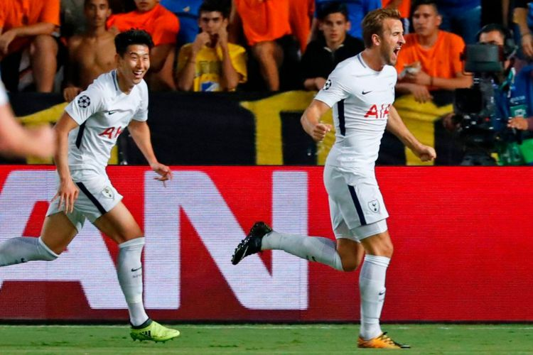

Hasil Liga Champions, 2 Hat-trick pada Laga 26 September 2017
JALU WISNU WIRAJATI
KabarKabur.com - 27/09/2017, 04:31 WIB

Harry Kane dan Son Heung-min merayakan gol Tottenham Hotspur ke gawang APOEL Nicosia pada pertandingan Liga Champions di Siprus, Selasa (26/9/2017).(AFP/Jack Guez)
Pertandingan kedua Liga Champions telah dimulai pada Selasa (26/9/2017) malam atau Rabu dini hari WIB. Ada dua hat-trick yang teradi pada pertandingan Grup E dan Grup H.
Di Grup E, Sevilla tampil gemilang dengan menaklukkan Maribor 3-0 berkat trigol Wissam Ben Yedder. Tim asal Andalusia itu memimpin klasemen dengan koleksi empat poin, unggul dua angka atas Liverpool dan Spartak Moskva.
Harry Kane tak mau ketinggalan. Striker tim nasional Inggris itu mencetak trigol ketika Tottenham Hotspur menang 3-0 di markas APOEL Nicosia.
Kemenangan di klub asal Siprus itu membuat Tottenham Hotspur memimpin Grup H, sejajar dengan Real Madrid. Kedua tim meraih hasil sempurna dari dua laga dan selisih gol identik 6-1.
Sementara itu, laga ulangan final Liga Champions 2003-2004 terjadi ketika AS Monaco kalah 0-3 dari FC Porto di kandang sendiri. Selisih gol tersebut juga terjadi ketika kedua tim bertemu di final, 13 tahun lalu.
Hasil Liga Champions, Selasa (26/9/2017) malam atau Rabu dini hari WIB:
Grup E
Sevilla 3-0 Maribor (Wissam Ben Yedder 27', 38', 83')
Spartak Moskva 1-1 Liverpool (Fernando 25'- Philippe Coutinho 31')
Grup F
Manchester City 2-0 Shakhtar Donetsk (Kevin De Bruyne 48'; Raheem Sterling 90')
Napoli 3-1 Feyenoord ('Lorenzo Insigne 7'; Dries Mertens 49'; Jose Maria Callejon 70'- Sofyan Amrabat 90')
Grup G
Besiktas 2-0 RB Leipzig (Ryan Babel 11'; Anderson Talisca 43')
AS Monaco 0-3 Porto (Vincent Aboubakar 31', 69'; Miguel Layun 89')
Grup H
APOEL 0-3 Tottenham Hotspur (Harry Kane 39', 62', 67')
Borussia Dortmund 1-3 Real Madrid (Pierre-Emerick Aubameyang 54'- Gareth Bale 18'; Cristiano Ronaldo 50', 79')
penulis :Jalu Wisnu Wirajati
Editor :Jalu Wisnu Wirajati